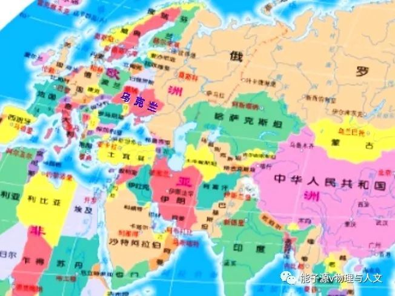
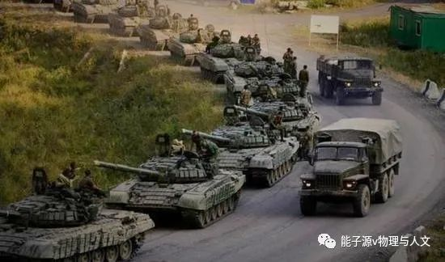
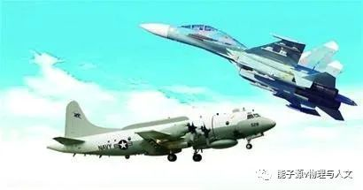
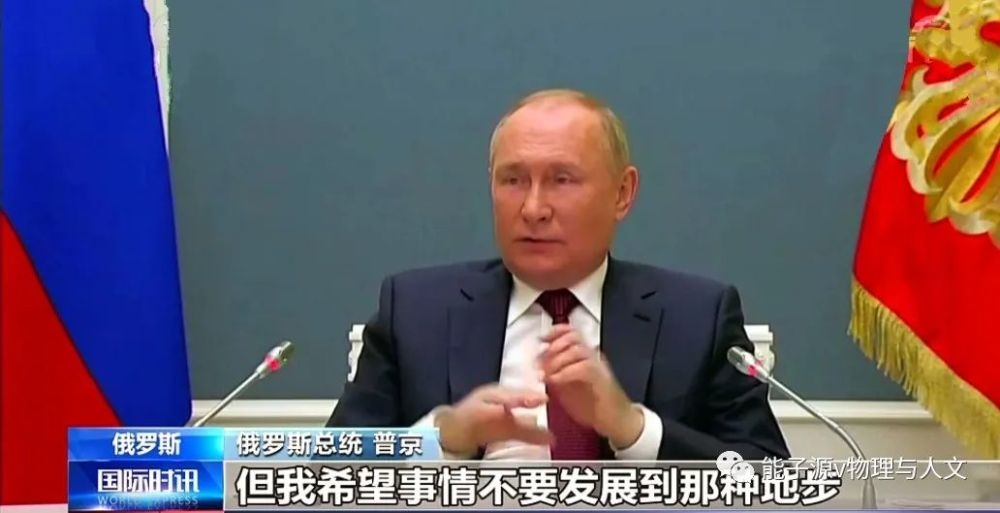
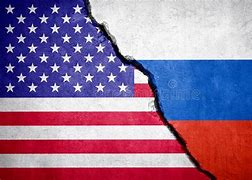

当今俄乌局势
2022年 3月5日 20:28

乌克兰位于欧洲东部，其面积在欧洲排名第二，它东连俄罗斯、南临黑海，北与白俄罗斯接壤、西面是欧盟各国。乌克兰地理位置非常重要，是俄罗斯和西欧的中心枢纽，是欧洲联盟与独联体特别是俄罗斯地缘政治的交汇处。一方面，俄罗斯可通过乌克兰把触角伸向欧洲西部的深处，不管是经济上的高效合作，还是从政治、军事方面战略高度的进退，都有着非常极其重要的意义。另一方面，美国及其北约，可通过乌克兰进一步蚕食俄罗斯政治空间。从地图上可以看出，乌克兰是俄罗斯和北约之间一个重要的缓冲地，更是俄罗斯政治地域的一条红线，如果乌克兰加入北约，俄罗斯敢不惜一切代价发动一场战争。
从2021年上半年开始，德国一直阻止北约向乌克兰提供武器，其实质是阻止美向乌供武，因为这些武器大部分来自美国。默克尔这样做，是担心乌克兰获得武器后会挑起与俄的战争，如此德国就尴尬了，因为“北溪-2”工程一直被美国盯着，如战争爆发德国只能和俄罗斯对着干，北溪项目自然就没戏了。

2021年2月，乌政府与顿巴斯地区冲突持续加剧。3月，乌集中兵力猛攻顿巴斯，造成数名军人身亡，这进一步激化了乌东部动荡的局势。近期俄乌局势持续紧张，乌方称俄罗斯在俄乌边境部署超过9万人的军队，俄罗斯回应其行动纯属防御性行为。俄称乌克兰在顿巴斯地区部署达十二多万人的部队，这相当于乌克兰一半军队堆在俄罗斯面前；另外乌在军演中使用了美国的“标枪”反坦克导弹。但英专家认为，俄罗斯只需用不到一个小时就可以将其荡平。
与此相应，美国和北约近期频繁出现在俄罗斯周边，对其开展近低侦察。12月3日至9日，俄军机多次伴飞、拦截美国等西方的侦查机；11日美军一架电子侦察机又现身乌克兰上空，该机现身可能与俄罗斯向俄乌边境调派防空导弹有关。今年美国和北约在俄家门口举行多场军演，同时美向乌提供大量进攻性武器；近日美俄在乌对立急剧紧张。西方围堵打压俄，在经济上加强制裁，在军事上不断挑衅。面对西方，俄罗斯打出“文武两张牌”回击，在外交上提出安全保障条约；在军事上系统有序地推进军事力量，并称七天内可打掉五国的首都。与此同时，乌克兰又要求美提供爱国者导弹防控体系。12月13日普京与英国首相约翰逊通话表示，北约成员国扩大在乌军事活动，对俄罗斯的安全构成威胁；14日乌议会通过一项2022 年参加在乌境内举行多国军演的法案，这更激怒了俄罗斯；17日俄提出安全保障建议，希望能和美国等西方商讨，俄的安全保障主要体现了三个方面，即北约不能再东扩；不允许北约和西方在乌克兰、南高加索、东亚，甚至中亚进行军事部署；特别强调乌克兰绝对不可以扩向北约；18日拜登政府准备进一步武装乌克兰；20日俄罗斯表示如果北约东扩，俄将进行军事回应，同时称俄愿意和美国缓和关系，所有问题都可以放在桌面谈。21日俄称美向乌提供了一大批武器，还派特种部队，并表明美私营军事公司把化学武器运往乌克兰。俄警告会以一切手段对等回应以维护安全，以有序系统地推进军事力量，并包括在白俄罗斯部署核武器，但俄不愿意有流血冲突，希望通过外交和平解决。22日俄外长表示，俄美确认就俄提出的安保条约在明年初举行磋商，但是就在俄美谈好磋商时，乌举行军演，美有关人士透露拜登政府准备加大制裁俄罗斯，这样谈判还能否继续进行；同一天俄、乌、欧三方愿意恢复顿巴斯停火协议，这是近期局势缓和的重要信号。23日普京在莫斯科举行的年度记者会上表示，俄无法接受北约的再东扩，俄也没有威胁别人的意愿，但俄一定会维护自己的利益；同一天美官网声明，美国务卿布林肯和北约秘书长通话，双方称北约准备和俄开展有意义的对话。虽然乌局势有缓和的信号，但剑拔弩张的事态能否转好，一切静待。
乌克兰的乱局与美国的搅局分不开。
近些年美国在西亚战略连连失利。2011年叙利亚内战以美败俄胜告终。叙内战前期，美国及其成员国以支持反对派，推翻阿萨德政府为目的；后期美国主导的国际联盟以消灭“伊斯兰国”为明面目标，让阿萨德下台。2015年随着俄罗斯的介入，叙政府转守为攻，到2020年叙政府收复大部分领土，并宣布将收复叙全部领土。叙内战使叙利亚成为中东最血腥疆场，并导致中东局势愈发动荡不安。2011年12月，美国从伊拉克撤军，伊拉克虽然现在和美国保持良好，但和伊朗也特别亲热。2021年5月，美国在阿富汗开始撤军，并于8月底无可奈何的、不负责任的全部仓皇撤军，确切地说是一次大溃败。美国打着反恐旗号进入阿富汗，想利用阿富汗牵制俄罗斯，进而掌控世界格局；但二十年的入侵，是一个战争和混乱的阿富汗岁月，这不仅给阿富汗人民带来前所未有的灾难，同时让美国深陷泥潭，最后只能溃败逃跑。叙利亚、阿富汗都败给了俄罗斯；在伊朗面前又只能制裁不敢动武，因为伊朗后面站着俄罗斯；伊拉克方面也有违初衷；就连土耳其也在叙利亚内战中，和俄罗斯走的越来越近；现在在中东唯一可玩的就剩下以色列。西亚的败局标志着美国在称霸世界的道路上进入转折点，世界警察的失落感，只能在犄角旮旯里找找.

乌克兰重要的地理位置和特殊的俄乌关系，让美国看到了搅局的机会。乌克兰只是北约冲锋陷阵的棋子；对俄罗斯，美国只是经济制裁，即使俄对乌动武，美也不敢轻易出兵，顶多买一些武器、供一些情报之类的事情。在乌克兰方面，美国既想拖住俄罗斯，又不会和俄罗斯大干一场，最后倒霉的是乌克兰当局，受害的是乌克兰人民，这是美国一贯的作风。在美国国力日渐下降的趋势下，身为域外国家的它借乌局势的激化，挑拨俄欧、敲打欧洲，让欧洲知道美国老大地位的不可代替性。尽管“北溪-2”现已中断，但美对此并不放心，再度借乌局势让俄欧裂痕扩大化，这样美国才得以极限施压俄罗斯。在俄罗斯亮明核底线的情况下，美国则似乎只在经济层面加以威胁，从而掩盖拜登政府在明知不可为而为之仍一再搅动乌局势，其暗藏有转移矛盾的动机。

西亚的惨败使美国称霸世界走向衰落；欧洲与俄罗斯的经济关联，让美国醋坛子翻天；中俄近几年的亲密伙伴关系，也让美国心惊胆战。一贯自以为是的美国，在实行世界霸权和推行自己所谓民主观念的失败之后，开始感到有点失落，但始终没认识到自己的错误，为了找回那些可怜的傲慢，继续不择手段地搅乱世界，乌克兰就是一个自认为不错的良机，但在俄罗斯强硬回击下也只能最后弃子收场。最后希望乌克兰能认清现实，平安度过每一天；望俄美能坐下来好好谈谈，争取求同存异，处理好当下局势！